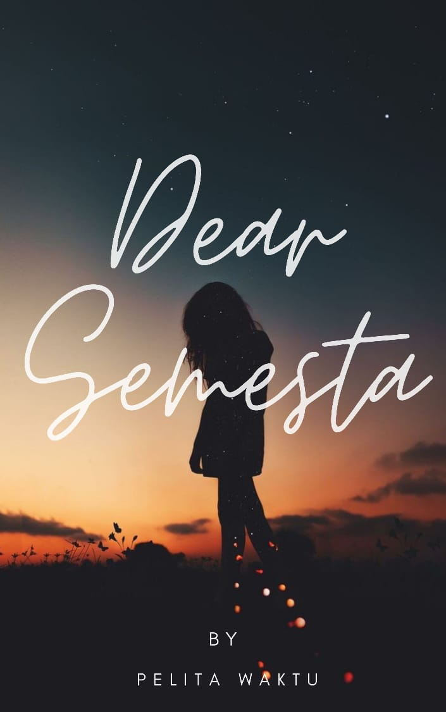

Dear Semesta

Website ini merupakan website yang mengubungkan pembaca dengan tulisan author yang berjudul Dear Semesta. Di website ini pembaca dapat membaca Dear Semesta dengan mengklik link yang telah sediakan kemudian pembaca akan terhubung dengan original story di Wattpad. Selamat Membaca dan Terima kasih sudah berkunjung.
Sinopsis
Dia gadis berparas cantik dengan sejuta rahasia. Ya, Auristella Pelita Husein.Setelah bertahun-tahun lamanya ia bertemu kembali dengan Adhitama Reihan Mahendra. Reihan penasaran pada sosok Pelita yang sepertinya tidak asing di matanya dan entah seperti ada magnet yang menariknya untuk mendekati Pelita. Apakah pertemuan ini menjadi awal cerita mereka ataukah sebaliknya? Pelita bingung apakah dia sedang mempertahankan atau menunda luka yang amat dalam. Pelita percaya bahwa sudah ada kesepakatan antara semesta dan takdir... Bukankah begitu?
Baca
Prolog
Baca
Aku tahu kau selalu punya cara untuk merangkai setiap kejadian di muka bumi ini. Sudah ada kesepakatan antara semesta dan takdir. Bukankah Begitu?
~Auristella Pelita Husein
Pelita dan Reihan Kecil
Baca
“Ma, Pelita boleh bawa Kiki main di luar kan?” ucap seorang gadis kecil dengan baju berwarna pink dan memeluk boneka panda.
“iya sayang, boleh kok. Mainnya hati-hati ya, jangan keluar halaman. Oke?” Balas Bulan sambil mencubit pelan hidung mungil anaknya.
Pelita tersenyum sambil memeluk kaki mamanya yang sedang sibuk membereskan dapur “iya ma”
01. Mulai
Baca
Bel masuk berbunyi, seluruh murid bergegas masuk ke kelas masing-masing.
"Selamat pagi anak-anak" sapa bu Erin
"Pagi bu" jawab seisi kelas dengan kompak
"Baik pagi ini kalian kedatangan teman baru, silahkan masuk"
Masuklah seorang gadis dengan seragam SMA Galaksi. Rambutnya sebahu dan menggunakan kacamata yang bentuknya sesuai dengan parasnya yang cantik.